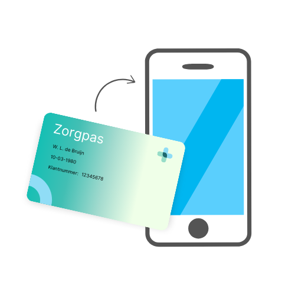

Dit is jouw Europese zorgpas.
Met deze pas krijg je noodzakelijke medische zorg als je ziek wordt tijdens een verblijf of vakantie in Europa.
De zorgverlener kan direct zien dat je verzekerd bent en bij welke verzekeraar.
Klik op de kaart om de voor- of achterkant te bekijken.
Wil je jouw Europese Zorgpas opslaan in je wallet?
Scan de QR-code en neem je zorgpas digitaal mee op reis. Na het scannen wordt je Europese Zorgpas opgeslagen in je wallet en kun je deze eenvoudig delen met zorgverleners tijdens je verblijf in Europa.

Scan de QR-code met je wallet app